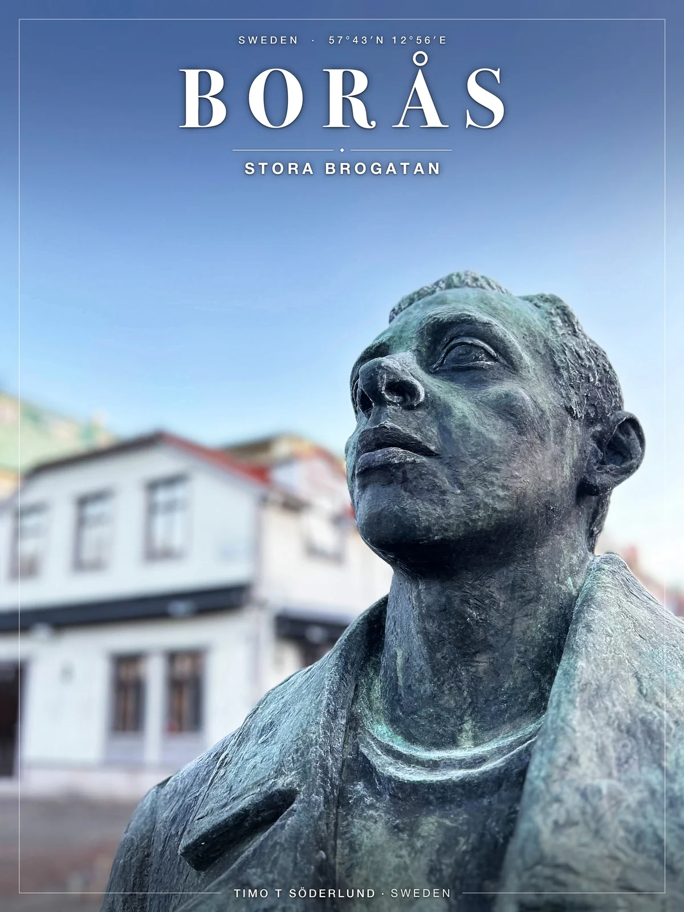

Knallen · Stora Brogatan
Bronze Sculpture by Arvid Knöppel (1947) · Borås, Sweden
English
Shot with medium-format intimacy along Stora Brogatan in central Borås, Sweden, this portrait-style poster reveals every weathered bronze texture and verdigris patina of Knallen—created in 1947 by Swedish sculptor Arvid Knöppel. Honoring the historic travelling merchants of the Sjuhärad region, the figure gazes upward against softly blurred facades and a clear Nordic sky. Part of Borås Poster Project 2026 by Timo T Söderlund, celebrating the heritage of Boras, Sweden.
Svenska
Fotograferad på nära håll längs Stora Brogatan i centrala Borås lyfter denna poster fram varje väderbiten bronsstruktur och ärgad patina hos den välkända statyn Knallen, skapad 1947 av skulptören Arvid Knöppel. Som en hyllning till Sjuhäradsbygdens historiska gårdfarihandlare blickar figuren uppåt mot en klar nordisk himmel. En del av Borås Poster Project 2026 av Timo T Söderlund.
Photographer & Edition: Timo T Söderlund · Borås, Sweden (2026)